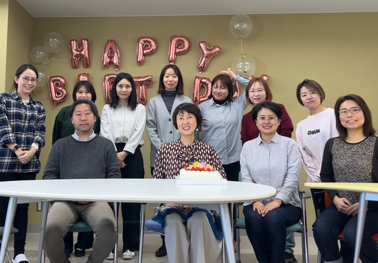
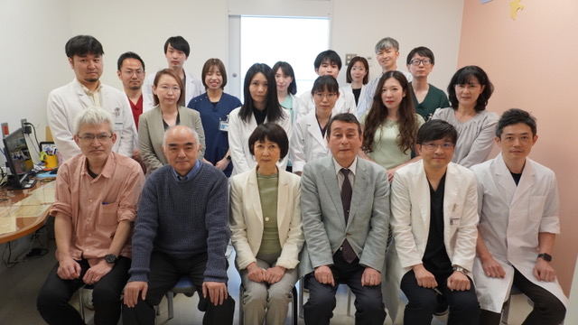
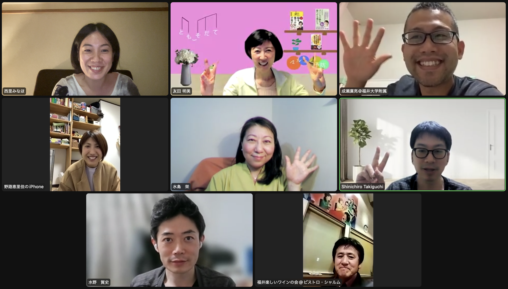

メンバー紹介

子どものこころ診療部メンバー

水島さかえ先生 教授就任記念 オンライン同窓会

パーティ
紹介・院生便り
- 友田 明美 (教授）
- 藤澤 隆史 (准教授)
- 西谷 正太（特命講師）
- Natasha Y. S. Kawata（特命助教）
- 平岡 大樹（特命助教）
- 伊達岡五月（学術研究員）
- 王佳 Wang Jia（特別研究員・ハルビン医科大学公衆衛生学院 教授）
- 山口 明子（連合大学院博士課程 卒業生・特別研究員）
- 榊原 信子（連合大学院博士課程 卒業生・特別研究員）
- 鈴木 静香（連合大学院博士課程 卒業生・子どものこころ診療部）
- 八坂 知美（連合大学院博士課程D4・福岡市立西部療育センター小児科）
- 牧野 拓也（連合大学院博士課程D4・本学精神医学 特命臨床心理士)
- 落合 恵子（連合大学院博士課程D4・兵庫県尼崎こども家庭センター）
- 濱村 尚子（連合大学院博士課程D4・鹿児島大学病院神経科精神科)
- 倉田 佐和（連合大学院博士課程D4・子どものこころ診療部）
- 川口 優子（連合大学院博士課程D2）
- 吉馴 亮子（連合大学院博士課程D1・子どものこころ診療部）
- 畑中 幸江（発達支援研究部門・秘書）
- 平谷 美智夫（客員教授・平谷こども発達クリニック院長）
- Jay Giedd (招聘教授・UCSD校 児童青年精神科学科長）
過去のメンバー
- 山﨑未花（特命助教）
- 八ツ賀 千穂（特命助教）
- 熊崎 博一（特命助教）
- 牧田 快（特命助教）
- 椎野 智子（特命助教)
- 島田 浩二（助教）
- 滝口 慎一郎（子どものこころ診療部特命助教）
- 飯田 知子（子どものこころ診療部特命助教）
- 水野 賀史（連合大学院博士課程 卒業生・子どものこころ診療部特命助教）
- 小島 雅彦 (連合大学院博士課程 卒業生）
- 青井 利哉 (連合大学院博士課程 卒業生）
- 水島 栄（連合大学院博士課程 卒業生）
- 成瀬 廣亮（連合大学院博士課程 卒業生）
- 浅野 美菜保（連合大学院博士課程 卒業生）
- 久保下 亮（連合大学院博士課程 卒業生）
- 笠羽 涼子（連合大学院博士課程 卒業生）
- 山口 大輔（連合大学院博士課程 卒業生）
- 土橋 圭子（連合大学院研究生)
- 西川 里織（RISTEX学術研究員）
- 矢澤 亜季 （RISTEX学術研究員）
- 高田 紗英子（診療部臨床心理士・RISTEX研究員）
- 安田 久美（診療部臨床心理士・コホート研究員）
- 松村菜々子（特別研究員・平谷こども発達クリニック）
- 梅田亜沙子（診療部臨床心理士）
- 小坂 拓也（子どものこころ診療部・医学部小児科特命助教）
- 野路 恵里佳（後期研修医、肥前精神医療センター）
- 小泉 径子 (PD特別研究員）
- 田仲 志保（技術補佐員）
- 水野 敬 (学外研究員・理化学研究所）
- 松浦 直巳（客員教授・三重大学教育学部特別支援教育）
- 岡田 眞子（子どものこころ診療部・心理士SV）
- 森岡 茂己 (学外研究員・福井愛育病院小児科）
- 梅本 円（研究補助員）
- 道下 優子（研究補助員）
- 森田 友絵（研究補助員）